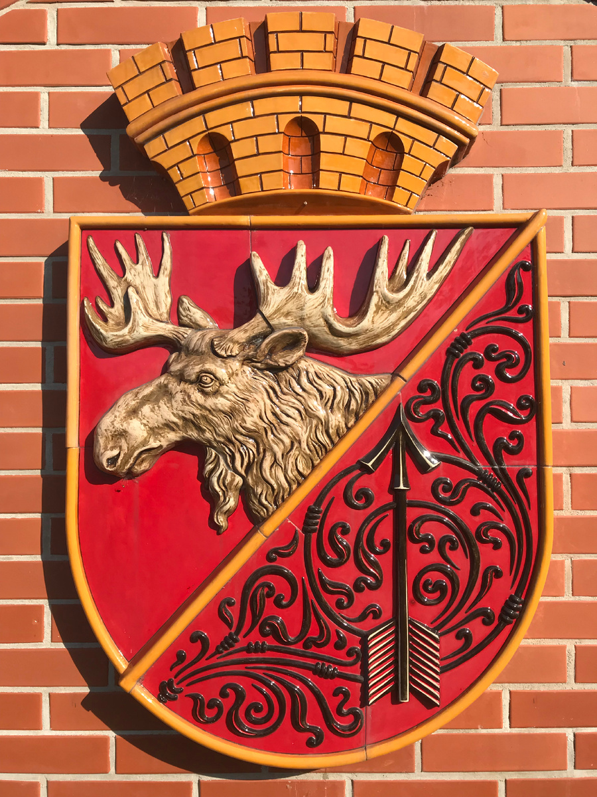

О лосе
Лось для Гусева — не просто животное. Это символ города, изображённый на его гербе, и живой памятник в самом центре. Рассказываем, как сохатый стал главным гусевцем.

Герб Гусева
Современный герб утверждён 12 декабря 2005 года: красный щит, пересечённый по диагонали тонкой линией; вверху — золотая голова лося с рогами о семи отростках, внизу — чёрная стрела.
«Щит скошен слева на два червленых поля, разделённых тонкою золотою линией; в первом поле — золотая возникающая лосиная голова с рогами, каждый из которых о семи отростках; во втором поле — чёрная стрела».
В апреле 2006 года в герб внесли поправку: тонкая чёрная диагональ стала золотой — как символ богатства края.
«Королевская ошибка»
Исторический герб Гумбиннена был пожалован королём Фридрихом Вильгельмом I и содержал геральдическую ошибку: два красных поля с чёрными фигурами — «финифть на финифти». Ещё в 1895 году геральдист Отто Хупп приводил его как пример того, «каким герб быть не должен».
Но исправлять ошибку, пожалованную из королевских рук, никто не осмеливался — горожане даже гордились её неповторимостью. Попытка «исправить» герб в 1936 году публикой принята не была. Так «королевская ошибка» дожила до наших дней: оба поля современного герба по-прежнему червлёные.
Почему именно лось
Лось — природный символ Янтарного края: статный, мощный, живущий в лесах и болотистых низинах этой земли. Ещё в 1787 году рог лося о семи отростках стал тавром для клеймения тракененских скакунов.
Когда прусский орёл ушёл с герба как символика несуществующего государства, равноценной заменой ему мог стать только лось.
Скульптура 1912 года
Бронзовый лось был установлен в городе в 1912 году и пережил целую эпоху: войны, переезд в Калининградский зоопарк и возвращение в Гусев в 1991 году.
С тех пор скульптура — живой символ города, а с 2006 года голова лося украшает герб Гусева.
Большой герб: корона и липа
Щит герба венчает золотая башенная корона о пяти зубцах — «корона городского округа». Обрамит его венок из липовых ветвей с лентой «Гусев».
Липа — символ древней земли Надровия, где и стоит город. По одной из версий, имя Гумбиннен произошло от прусского «гумбас» — искривлённая липа, которой поклонялись местные жители.
Лось живёт и в нашем логотипе: ФлаерГусев — каталог магазинов города, чей символ — сохатый.
Перейти к каталогу